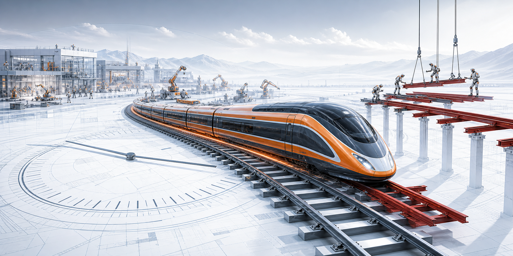

Rail progress 64
研究、开源模型、会议赛道、真实机器人数据闭环正在铺轨。
这是一个具身智能产业的末日钟：实验室和 NEO lab 在前面铺铁轨，资本和行业 PR 把高速火车往前推。真正的风险不是没有轨道，而是火车先跑到未铺完的地方。
当前设钟把研究铁轨读为 64，把资本火车压力读为 82。18 点压力差把钟推到 11:42 PM，离 midnight 还有 18 分钟。

研究、开源模型、会议赛道、真实机器人数据闭环正在铺轨。
融资、估值、发布会承诺、产业 PR 把火车速度推高。
资本耐心越少，demo 到 deployment 的断轨越危险。
轨道是技术和数据闭环，火车是资本和 PR 速度。末日钟关注两者的相对速度：如果铁轨追上火车，时钟会往回拨；如果融资和承诺继续快于可验证部署，时钟会向 midnight 逼近。
PI、Generalist、Google、NVIDIA 和机器人会议在把 policy、world model、data engine、deployment eval 铺成轨道；Figure、Skild、Sunday 这类融资与 PR 则把火车推向更高速度。红色段是火车头已经压到、但真实部署、unit economics 和安全冗余尚未铺实的区域。
跨 embodiment、复杂厨房任务、failure/autonomous data 的 generalist policy 进展。
human wearable data + 少量 robot data 的路线，把“机器人数据飞轮”推向新假设。
VLA pipeline、semantic robotics、safety、world modeling workshop 变成主线议题。
十亿级融资和家庭/工厂部署叙事，把行业钟表的秒针推得更快。
Gartner 的规模化提醒和真实客户续约压力，是这条轨道最硬的刹车片。
π0.7、GEN-1、Gemini Robotics、Cosmos 3/GR00T 和 ICRA VLA pipeline 支撑 64/100 的 rail read。
Figure、Skild、Sunday 的大额融资让 82/100 的 capital pressure 成为当前主读数。
Gartner 的 scale warning 和真实客户 uptime/cost，是把 clock 放在 11:42 PM 的主要刹车信号。
π0/π0.7, Gemini Robotics, GR00T and GEN-1 push generalist policy into real robot language-action loops.
Large robot datasets, data curation, teleoperation, synthetic data and competitions become infrastructure.
World generation and WAM/WLA work is moving fast, but physical grounding remains the load test.
Real uptime, cost, failure recovery, safety and maintenance are still much harder than demo videos.
The dangerous gap is not one lab result. It is whether customers renew after the pilot and unit economics survive.
这些分数是人工设钟，不是精确量化模型。研究卡表示“铺轨速度”，资本卡表示“火车加速”，风险卡表示“断轨可能性”。高分只代表这个信号正在改变 clock，不代表商业化已经成立。
Series C committed capital 和估值把“必须尽快 scale”的压力显性化。
“shared, general-purpose brain across embodiments” 是资本最容易加速的叙事。
No More Demos 口号直接把 demo 到 household deployment 的耐心窗口压短。
你给的融资图作为国内频率和方向分散度信号，不单独做 OCR 量化。
π0.7 把跨 embodiment、复杂厨房任务、zero-shot 组合泛化推到当前最强研究铁轨之一。
GEN-1 把低成本 wearable human interaction data、少量 robot adaptation 和 RL/post-training 合在一起，值得作为 NEO lab 铺轨信号。
Gemini Robotics On-Device 将本地低延迟和 50-100 demos 快速适配变成真实机器人开发路径。
Cosmos 3、GR00T、Isaac Sim、synthetic motion data 把 humanoid 训练管线推向更工业化的轨道，但这仍需要真实部署压力测试。
Series C 超过 $1B committed capital，$39B post-money valuation，资本火车已经进入高速段。
近 $1.4B 融资、超过 $14B 估值，叙事是 omni-bodied robot brain，市场耐心消耗会变快。
Series B $165M、$1.15B valuation，再加上 No More Demos 和家庭 robot 叙事，PR 热度很高。
ICRA VLA pipeline、IROS RoboGen、RSS safety/semantic robotics、CoRL world-model/data workshops 说明“数据到决策”正在成为主赛道。
Gartner 预计到 2028 年，在制造和供应链生产阶段规模化的 humanoid 公司少于 20 家。
你给的 2026 年 5 月具身智能融资汇总显示，国内融资频率和方向分散度也在给火车持续加柴。
Midnight 不是技术失败，而是资本耐心先耗尽：融资断裂、估值重定价、客户不续约、媒体从“新工业革命”转成“机器人泡沫”。这个 clock 是诊断工具，不是预测模型。
铁轨 = research / lab progress：VLA 控制、world model、真实数据飞轮、synthetic data、on-device 推理、跨 embodiment 泛化、会议和 arXiv 的问题密度。
火车 = capital / PR pressure：融资速度、估值斜率、mega-round、发布会承诺、household / factory deployment narrative，以及“今年就能落地”的语气强度。
pressure_delta = train_pressure - rail_progress
minutes_to_midnight = clamp(36 - pressure_delta, 3, 40)
base_set = 82 - 64 = 18 delta = 11:42 PM
| Axis | What counts | Current read |
|---|---|---|
| VLA / policy | π0/π0.7, Generalist GEN-1, Gemini Robotics, GR00T, cross-embodiment control, action-conditioned policy learning. | Good rail, but still task-family dependent. |
| World / data engine | Cosmos 3-style omnimodal world models, synthetic motion data, robot data curation, VLA pipeline competitions, WAM/WLA research, safety and semantic grounding workshops. | Fast construction, still weak on physics-grounded deployment proof, reward/interface design, and long-horizon maintenance data. |
| Deployment | Real homes, factories, warehouses, logistics, uptime, safety, maintenance, customer renewal and cost. | Shortest rail after demos. |
| Capital pressure | Figure, Skild, Sunday, Generalist/PI-style NEO labs plus the China May 2026 financing map you supplied. | Train already high speed. |
| PR heat | Robot brain, no more demos, beta this year, general intelligence for the physical world. | Useful for recruiting, dangerous for patience. |
Public-source check refreshed on 2026-06-09 SGT. The China May 2026 financing image is treated as a user-provided snapshot, not as a separately OCR-verified dataset.
Clock as warning metaphor, not precision instrument.
rail π0.7 technical reportSteerable generalist robot foundation model with emergent capabilities.
rail Generalist GEN-1Human interaction data, data-efficient robot adaptation, and physical task mastery claims.
rail Gemini Robotics On-DeviceLocal VLA, low latency, fast task adaptation.
rail NVIDIA Cosmos 3Open omnimodal world model tying understanding, generation, simulation, and action for physical AI.
conference ICRA 2026 VLA PipelineData-to-decision workshop and real robot data competition.
conference AIRoA data engine noteApproximately 10,000 hours of mobile manipulator data for the VLA pipeline competition.
rail World model surveyRobotics-centered view of world models for policy learning, planning, simulation and evaluation.
conference IROS RoboGenWorld generation for robot learning and validation.
conference RSS SemRob 2026Semantic reasoning, task representations, and real-world robustness as rail-building topics.
risk RSS FM safety workshopEvaluation, runtime assurance, robustness, and safety bottlenecks for embodied foundation models.
train Figure Series C$1B+ committed capital, $39B post-money valuation.
train Skild AI Series CClose to $1.4B funding, over $14B valuation.
train Sunday Series B$165M at $1.15B valuation, explicit deployment narrative.
risk Gartner readiness warningHype outpaces readiness for large-scale humanoid deployment.
conference CoRL 2025 workshopsResponsible robotics foundation models and real-world robot learning.
agenda Robots Need More than VLA and World ModelsRecent agenda for missing interfaces beyond VLA/world-model progress.
visual asset Generated rail-train clock sceneCustom page asset, not scraped from a third-party image source.
可靠跨场景部署、可复现 robot data engine、公开 benchmark 上的长期任务成功率、真实客户 uptime/cost 数据。
融资和估值继续倍增，但实际交付停留在 demo、beta waitlist 或少量 pilot。承诺越具体，耐心燃烧越快。
不是研究停止，而是产业叙事失去燃料：下一轮断裂、客户不续约、估值重定价、招聘和供应链同步收缩。
{kind=link}